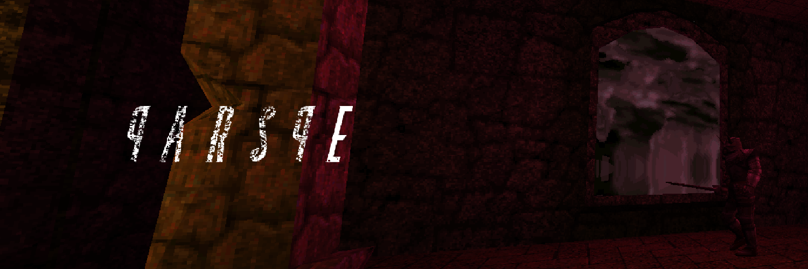
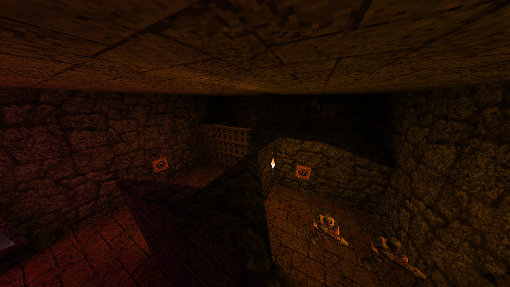
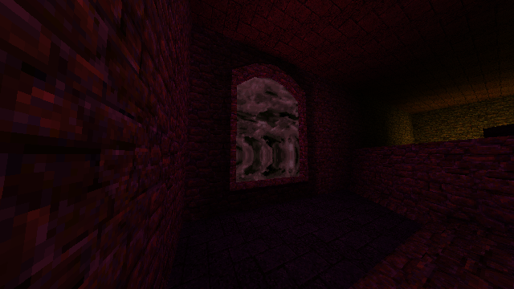
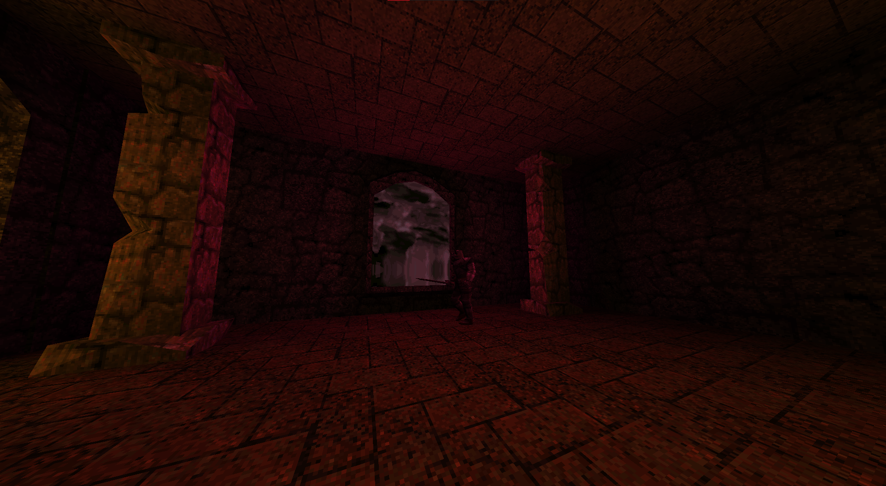

Much like one of my Quake levels, this was a way to help me understand how to design levels, from concept to completion. Using much more complex tools & software to do it. As well as Source Ports that allow for lighting.
Is Compatible with most Quake Ports, besides the DOS Original & WinQuake
A Quake map I made to learn more about Level Design in a more complex environment
Wanna see a certain bit of my work?

Much like one of my Quake levels, this was a way to help me understand how to design levels, from concept to completion. Using much more complex tools & software to do it. As well as Source Ports that allow for lighting.
Much like my DOOM WAD, Qarsqe started with a brainstorm of what I had wanted in a Quake Map. Was it something much like the original Quake? Or something weird and unique? How would either work? What seems like the better idea? In the end, I decided to make a mish mash of both ideas. Mixing the idea of a three floor castle with different environmental styles and quirks with something dark and gloomy.

There is a thing in Quake that allows you to make button sequences. In Trenchbroom its a 'trigger_counter'. Lets you have buttons call it from their entity settings, when it trips, the counter triggers something else. This lets you do rather fancy things.
I designed the mini-puzzle in the image above. the player first trips a button up the front, which brings in knights, then go into a small area to do the rest. They have to press these in order, however. This is done through 'trigger_relay' objects. Basically, anything can trip it and it relays the signal to objects it has been set to target. So for my puzzle, I made it so it opens doors & unlocks an elevator, allowing the player to do a sequence.
One of the most important things to a Quake map is its atmosphere. There are many video essays & articles about how the game is 'lovecraftian horror' and other terms. A way to get that feel is to have ambience, something not music-like, just something that makes you feel disturbed, uncomfortable.
So the audio itself is not music, but ambience that plays in the background. Its a simple mish mash of stock audio I could access and use. I did some basic Audio Editing in Audacity to give it a disturbing feel.
I feel like its also important to note that I had to understand how Quake did music. It MUST be an .ogg file, named 'track{number}.ogg'. Just a heads up for anyone who would like to do Quake mods with audio.

One thing I am rather proud of is the lighting in the map. Lighting like what is seen above isn't typically possible in normal Quake, you need a source port (or the Nightdive remaster). The one used while the level was being created was FTEQW, other ports have weird bugs associated with them, generally just visual issues.
Creating lights & giving them a colour was generally pretty easy. Placing them was difficult, Trenchbroom doesn't let you see live light previews. So you have to do a back & fourth testing, seeing a problem then revising.

Skys in the map do not produce light, it is up to the level designer to place one in front of it. It took a short while to get used to lights, colouring them right & placing them in reasonable spots. But eventually it gets to a point where you start going into a state where it becomes second nature.
In the end, I am rather proud of how the lighting is. How the cursed world outside affects the light coming in. There is a lot more things you can do in terms of lighting in Quake. Its not sector-based like in DOOM.